Chapter 8 · Part 2 — Yum
Finally, the warrior bit into his sandwich. He chewed slowly.
“This is called a picnic,” said Annie.
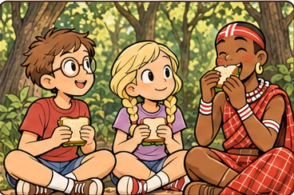
They ate their sandwiches in silence.
When they finished, Jack screwed the lid back on the peanut butter jar.
“Not bad, huh?” he said.
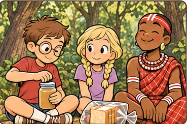
The warrior smiled. He had a kind, dignified smile.
Jack and Annie smiled back at him.
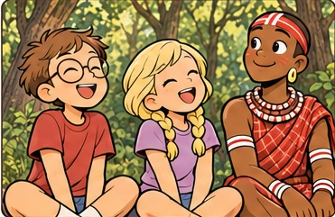
Then the warrior turned gracefully and vanished into the trees.
“Oh, man,” said Jack. Part of him wanted to follow the silent warrior through the shadowy forest.
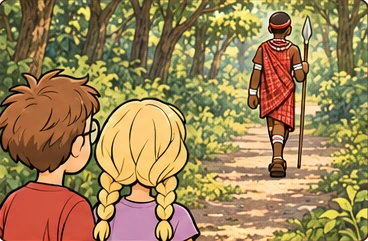
“Ready?” Annie asked softly.
Jack nodded.
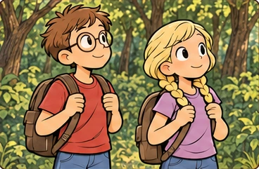
Annie started to go.
“Wait,” said Jack. He put away the peanut butter and bread. “We’re going back to the tree house, right? We’re not going to do anything silly, like rescue anything or chase birds. Right?”
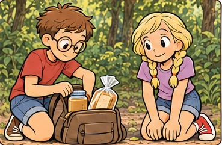
“Those things aren’t silly,” said Annie. “Don’t forget that the bird gave us the answer to the riddle.”
“Oh. Right,” said Jack.
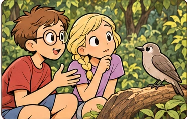
He looked at the little honey guide. She was on the ground, pecking at the honeycomb.
“Thanks,” Jack said to the bird.
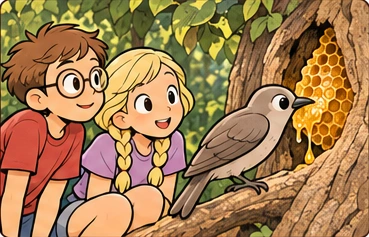
“Have a good feast,” said Annie.
Jack put on his pack. Then he and Annie started out of the forest.
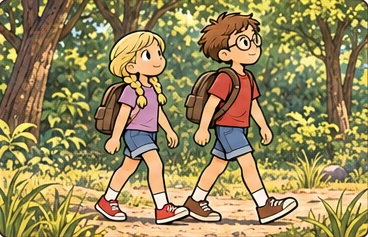
When they passed the pond, they saw the elephant still splashing in the water. He lifted his trunk. He seemed to be waving at them.
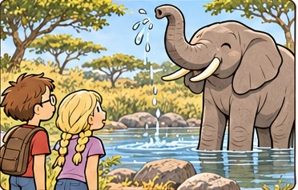
“See ya!” Annie shouted, waving back.
They rounded the bend in the river, then started through the tall grass.
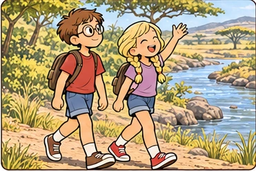
As they walked back toward the tree house, they saw the wildebeests in the distance. There were still some crossing the river.
They saw a family of zebras grazing together.
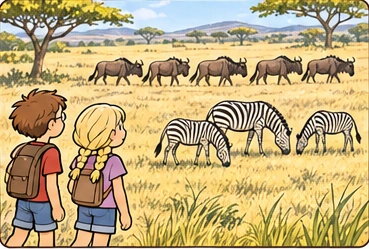
They saw lone giraffes walking from tree to tree, eating the leaves.
And they saw a bunch of lions sleeping in the shade of a tree—the same tree that the tree house was in.
“Whoops,” said Annie.
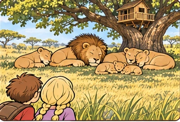
Jack’s heart gave a jump.
“So there they are,” he said.
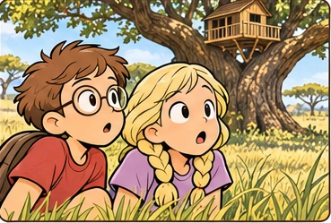